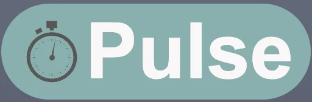
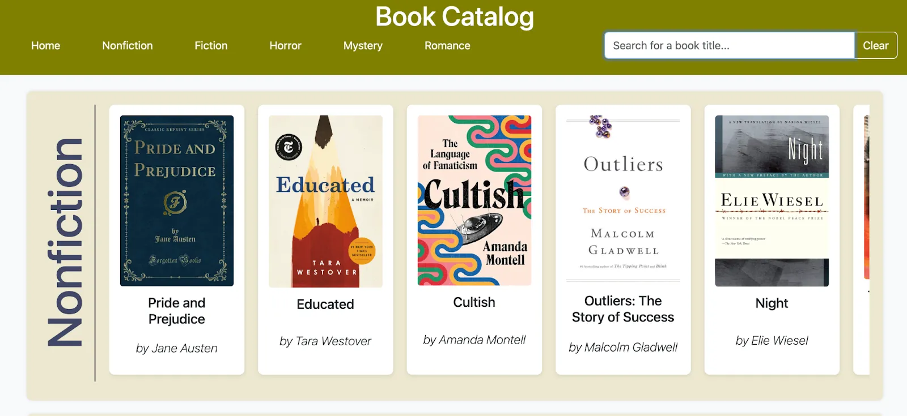
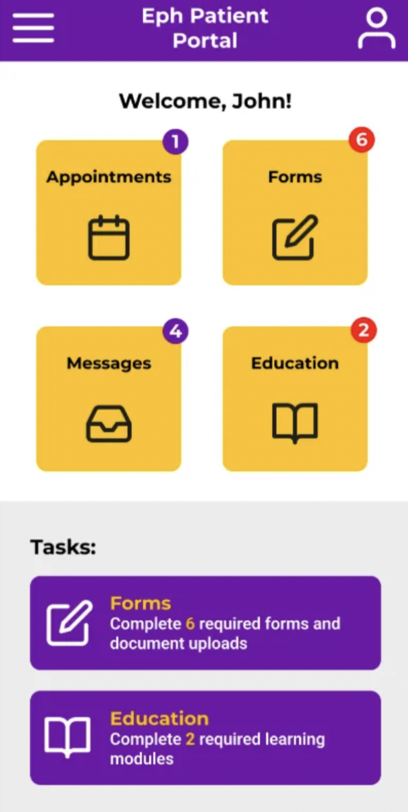

Super Mario Bros. — Hands Edition
In this project, we implement gesture based controls for navigating Super Mario Bros. Through a rigorous feedback, iteration process, we were able to keep the gestures intuitive so that a first time user would be able to learn through trial and error. We find that our innovations lead to a more immersive player experience, keeping in with the spirit of the game. This project is a sandbox for increasing access to games for people who may not be able to use a keyboard.
Alternative Input
Game Design
Accessibility
Read Case Study

Pulse — Chrome Extension
Modern browsers are filled with distractions: tabs, notifications, and cheap endless content for consumption. Pulse is a Chrome productivity extension that enables the user to set a timed goal for focused work. If the user navigates to another page, Pulse sends an alert and a motivation quote to the user to keep them on track.
Chrome Extension
Productivity Software
Time Management
Read Case Study

DS4 — Bookstore Catalog Redesign
In this project, we build a discoverable, intuitive, and modern bookstore using the Bootstrap library. The primary lesson from this project was how to organize information so that it is easily accessible to the user. This project was an exercise in human-centred, iterative design.
UX Design
Information Architecture
Read Case Study

Eph Patient Portal (Mobile)
This project is a mobile redesign focused on the Eph Patient Portal, trying to change it from its current cluttered desktop interface into a mobile platform specifically tailored for first-year Williams College students using Figma. Our redesign prioritizes efficiency, creativity, and the needs of first-years students at Williams.
Mobile Design
Prototyping
Read Case Study